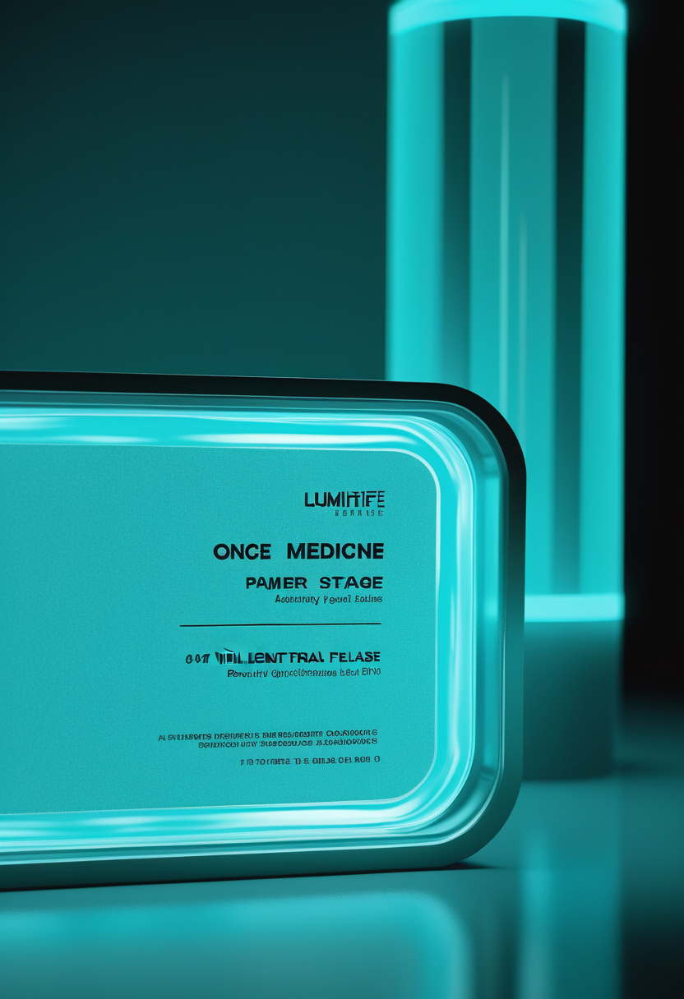
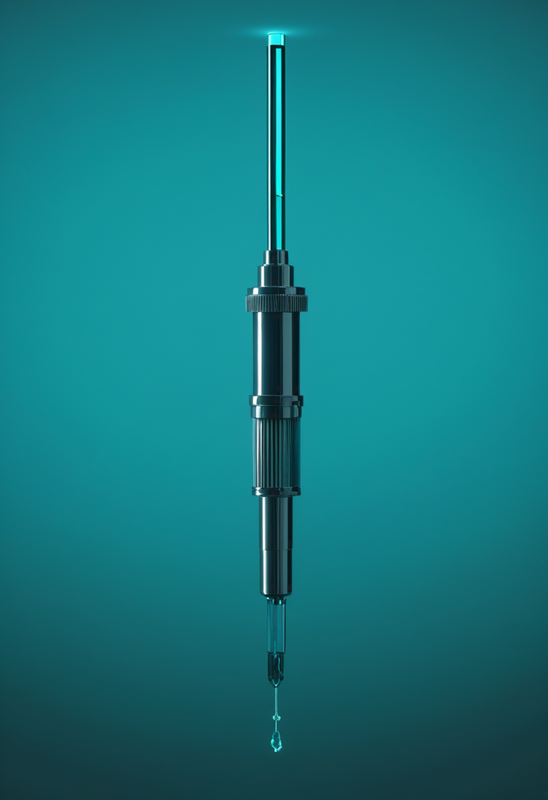
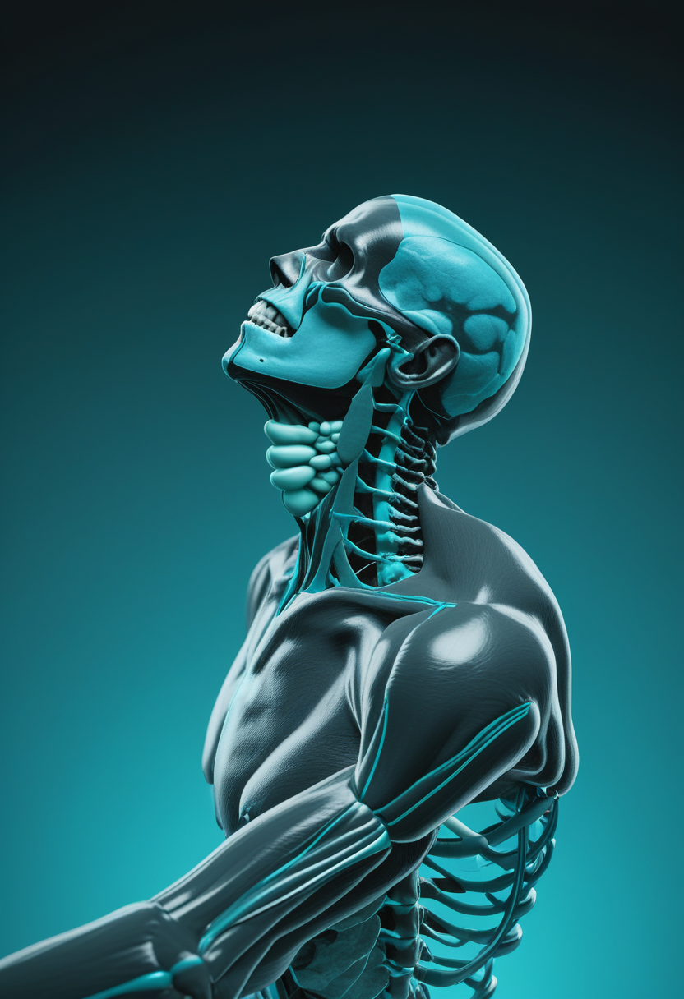

土曜日の便り。DRC(コンゴ民主共和国)のブンディブギョ型エボラは確定約3,553例・死者約1,558人(7/31時点)に達し、2018-20年の同国アウトブレイク(約3,481例)を上回り「史上2番目の規模」に拡大した。震源地イトゥリ州を中心に拡大が続く一方、人道対応計画の資金充足率は依然45%にとどまる。ウガンダのマールブルグ病は政府からの続報が途絶えWHOが要請を重ね、米国の麻疹は2026年通年ですでに前年実績を上回った。それでも命の現場では、Biogen/Ionisのサレナーセンが第3相試験段階に進みマイルストーン支払いを受け、8月のSMA啓発月間が新生児スクリーニング拡充を訴え始めた。自由の分野では、Neuralinkの評価額が非公開市場で最大420億ドルに急騰したと報じられる一方、ピッツバーグ大・シカゴ大のチームは脳インプラントによる触覚回復を最長10年間安全に維持できることを示した。畏敬の章では、NASAが銀河「郊外」で恒星を破壊するさまよう超大質量ブラックホールを発見し、IBMは商用量子コンピュータでの量子優位性実証を発表した。そして美の章では、AIの「厚生」を実証科学として検証する枠組み論文と、神経技術による認知増強と人権法の緊張関係を分析する論文が並んだ。
7/31号の続報 ― DRCで続くエボラ出血熱(ブンディブギョ型)の流行は、WHO発表・複数メディア報道(CNN/Al Jazeera、7/31時点)によれば確定約3,553例・死者約1,558人に達し、2018-20年の同国アウトブレイク(約3,481例)を上回り「史上2番目の規模」に拡大した。7/28時点(3,360例・1,487人)からわずか3日間でさらに悪化しており、国連エボラ対応調整官が警告した「20日ごとに倍増」ペースの深刻さを裏付ける形となっている。震源地イトゥリ州を中心に感染拡大が続く一方、人道対応計画の資金充足率は依然45%にとどまり、封じ込めの資源不足が懸念される。

Ionis Pharmaceuticalsは2026年7月29日発表の第2四半期決算で、Biogenと共同開発中の年1回投与型核酸医薬サレナーセン(BIIB115)が第3相試験段階(15〜60歳対象のSOLAR試験など)に進んだことを開示した。開発提携先のIonisは4500万ドルのマイルストーン支払いを受領し、Q2のR&D収益として計上した。サレナーセンは2026年6月にFDAから画期的治療薬指定を取得済み。
米国では毎年8月がSMA Awareness Monthで、2026年は8/1から本格化した。Cure SMAは新生児スクリーニングの全米・州レベルでの拡充を求める議員向けアドボカシー活動を呼びかけ、SMA News Todayも新生児スクリーニングと新規治療の進展を振り返る特集を展開している。
パイプライン(サレナーセン第3相移行)と啓発活動という「次の一手」が同時に動き出した8月の初日 ― apitegromabの米FDA目標日(9/30)に変更はない。
Business Insider・Semaforの報道(調査会社Caplightのデータ)を引用する複数メディアによれば、Neuralink株が非公開の二次市場で最大約420億ドル相当の評価で取引されている。前回公式資金調達ラウンド(約90億ドル、1年以上前)からの急上昇で、一部買い手は600億ドル規模での取得を目指すとも報じられた。二次市場取引に基づく非公式情報のため数値・日付ともに要確認。
米ピッツバーグ大学とシカゴ大学のチームは、Blackrock Neurotech製「Utah Array」電極による脳皮質内微小電気刺激(ICMS)で、脊髄損傷患者5人の手の触覚を最長10年間安全に回復できたと報告した。埋込期間合計約27年で約1億6800万回のパルス刺激を実施したが重篤な有害事象はなく、電極の約6割が長期間機能を維持した。
資金市場評価と長期安全性データという「事業性」と「実証性」の両輪の話題が並んだ一方、Synchron・Precision Neuroscience・Neuracleは直近の新規発表なし。
WHO発表として複数メディアが7/31時点で確定約3,553例・死者約1,558人と報道し、2018-20年の同国アウトブレイク(約3,481例)を上回った。7/26時点(3,200例/1,405人)→7/28時点(3,360例/1,487人)→7/31時点と3日おきに明確な増加が続いており、震源地イトゥリ州を中心に感染拡大が続く一方、人道対応計画の資金充足率は依然45%にとどまっている。
ウガンダは6/30、西部キエゲグワ県での幼児死亡例を機にマールブルグウイルス感染をWHOに報告した。7/16時点の報道では確定20例・死者2例とされるが、その後ウガンダ政府からの公式続報がなく、WHOが複数回にわたり最新状況の提供を要請している。直近1週間の新規更新は確認できず「要確認」。

CDCによると米国内の麻疹確定例は7/23時点で約2,318例に達し、2025年通年実績(約2,289例)を上回った。ワクチン接種率が95%の閾値を下回る約92.5%まで低下していることが背景とされ、2000年以来の「排除国」ステータスを失う懸念が専門家から指摘されている。
DRCエボラは3日間で約190例・71人増と悪化ペースが続き、資金充足率45%のまま「史上2番目」の規模に達した。マールブルグは情報途絶という別の懸念、麻疹は先進国での予防可能な逆行という3つ目の懸念軸が同時進行している。
NASAのSwift衛星と全天サーベイZTFのAI自動検出により、銀河中心から約3万光年離れた場所で恒星が引き裂かれる潮汐破壊現象(TDE)を発見した。ブラックホールは太陽質量の約100万倍、母銀河は地球から約7.5億光年、閃光は太陽の約100億倍の明るさに達し、銀河中心から最も離れた場所で確認されたTDEとされる。

中重度の化膿性汗腺炎患者を対象とした第3相試験STOP-HS1/HS2で、povorcitinib投与群は12週時点でHiSCR50達成率が約40.2%(45mg群)・約40.6%(75mg群)となり、プラセボ群の約29.7%を有意に上回った。54週時点では最大約71.4%が達成した。
IBMの133量子ビット超伝導プロセッサ「Heron」とQedma社の誤り緩和ソフト「QESEM」を組み合わせ、最大74量子ビット規模の2次元フロケ・イジングモデルの長寿命量子ダイナミクスを観測した。同規模の古典スーパーコンピュータでの再現が困難とされる現象で、商用ハードウェアによる実証として発表された(査読誌掲載か否かは未確定、プレスリリースベース)。
天問二号の小惑星接近が続いた前号から、今回はNASA発の「郊外型」ブラックホール発見と、IBM発の商用量子優位性実証という米国発の成果が中心。医学は皮膚免疫疾患領域で第3相の確定的データが出た。
NYUのCenter for Mind, Ethics, and PolicyとEleos AI Researchが、AIシステムが道徳的配慮の対象("welfare subject")たりうるかを実証的に検証する方法論的枠組み論文「Studying AI Welfare Empirically」を発表した。2024年の前作「Taking AI Welfare Seriously」の続編で、評価対象・問い・証拠の種類という3軸で研究を整理し、哲学的論争の決着を待たずにAI厚生を経験科学として前進させることを狙う。
Journal of Law and the Biosciences(Oxford University Press)に、Timo Istace・Kristof Van Assche両氏による論文「Neurotechnological cognitive enhancement and human rights」が掲載された。ニューロフィードバックや脳刺激デバイスによる認知増強がもたらすエンパワーメントと制約の緊張関係を人権法の観点から分析している。
思弁的な「意識アップロード」論よりも、AI厚生の実証科学化やニューロテクノロジーの人権法整備といった「ガバナンス実務」への重心移動が続く。
2026年8月1日、DRCのエボラは2018-20年の同国アウトブレイクを上回り「史上2番目の規模」に拡大する記録的な局面を迎えた一方、資金充足率は依然45%にとどまり資源不足が懸念される。ウガンダのマールブルグ病は情報途絶という別の懸念を抱え、米国の麻疹は2026年通年ですでに前年実績を超えた。命の現場では、Biogen/Ionisのサレナーセンが第3相試験段階へ進みマイルストーン支払いを受け、8月のSMA啓発月間が新生児スクリーニング拡充を訴え始めている。自由の分野では、Neuralinkの評価額急騰という「事業性」の話題と、ピッツバーグ大・シカゴ大による10年間の触覚回復という「実証性」の話題が並んだ。畏敬の宇宙では、NASAが銀河「郊外」で恒星を破壊するさまよう超大質量ブラックホールを発見し、IBMは商用ハードウェアでの量子優位性実証を発表した。そして美の章では、AIの「厚生」を実証科学として検証する動きと、神経技術と人権法の緊張関係を分析する研究が、ガバナンス実務への重心移動を示していた。
では、また明日の朝に。 — JaH